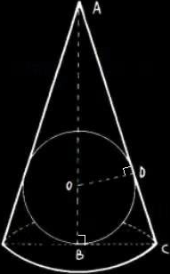

Esercizi su massimi e minimi di funzioni
Dopo aver stabilito l'insieme di definizioen delle seguenti funzioni, determinarne i punti di massimo e minimo e tracciarne sommariamente il grafico.
x2ex;
x3 + x2 − x +1;
∛xex;
x4 −8x3 + 22x2 − 24x + 12;
x2 logx;
x5 −5x4 + 5x3 +1;
√xlogx;
(x+2)/(x+1).
Una ditta produttrice di birra desidera minimizzare il costo della lattina. Essendo di materiale omogeneo e volume fissato (33 cl) occorre minimizzare la superficie totale del cilindro di volume pari a 33 cl. Quali sono le dimensioni (altezza e diametro) della lattina?
V = πr2h = 330 cm3; S = h x 2πr + 2πr2 = 2πr2 + 2πr(330/πr2) = 2πr2 + 660/r. Per minimizzare la superficie, dobbiamo trovare il valore di r che minimizza S. Deriviamo S rispetto a r
dS/dr = 4πr − 660/r2
dS/dr = 0 4πr − 660/r2 = 0
4πr3 = 660
r3 = 660/4π
r = (165/2π)1/3 ≈ 3.84 cmL'altezza è quindi h = 330/πr2 ≈ 7.68 cm. ■
Un uomo deve raggiungere un punto che si trova sull'altra sponda di un fiume, 100 metri più a valle; il fiume è rettilineo e largo 10 metri; l'uomo può correre sulla sponda del fiume con velocità v, quindi tuffarsi e attraversare a nuotor il fiume, con velocità inferiore, pari δv (0 < δ < 1).
Determinare dopo quanti metri di corsa l'uomo si deve tuffare, affiché sia minimo il tempo impiegato a raggiungere la meta.
Se l'uomo è un nuotatore provetto, δ sarà quasi uguale a 1: determinare il valore esatto di δ per il quale all'uomo conviene tuffarsi immediatamente, senza percorrere neanche un metro sulla terraferma.Definizione delle variabili:
x: distanza percorsa sulla terraferma prima di tuffarsi;
v: velocità di corsa sulla terraferma;
δv: velocità di nuoto nel fiume, dove 0 < δ < 1.
Tempo di corsa sulla terraferma:
tterra = x/v
Tempo di nuoto nel fiume: La distanza da nuotare è la diagonale del triangolo rettangolo formato dalla distanza residua lungo la sponda (100 - x) e la larghezza del fiume (10 metri).
Il tempo totale:
ttot = tnuoto + tterra = x/v + [sqrt((100 − x)2 +102]/δv
Minimizzazione del tempo totale: Per trovare il valore di x che minimizza il tempo totale, basta calcolare la derivata del tempo totale rispetto a x e impostarla uguale a zero.
Multiplying both sides by δv √[(100 - x)2 + 100]:
δ√[(100 - x)2 + 100] = 100 − x
1 = (100 - x)/ [δ sqrt((100 - x)2 + 100)]
δ sqrt((100 - x)2 + 100) = 100 - xor setting y = 100 - x:
δ2 (y2 + 100) = y2
or
(δ2 - 1) y2 + 100 δ2 = 0
or
y2 = 100 δ2 / (1 - δ2)and now take only the nonnegative square roots of both sides (è possibile prendere la radice dato che y = 100 - x ≥ 0):
y = 100 - x = 10 δ/sqrt(1 - δ2)
or
Tuffarsi immediatamente significa impostare x = 0, nell'equazione che minimizza t.
Solivng for delta
δ = 10√101/101 ≃ 0.995. ■
Si vuole costruire una scatola, senza coperchio, col vincolo che la base sia quadrata e la superficie totale della scatola misuri 108 cm2. Di quali dimensioni (lato della base e altezza) dev'essere affinché il volume sia massimo possibile? E quanto sarà il volume?
Definizione delle variabili:
x: lato della base quadrata della scatola;
h: altezza della scatola.
La superficie totale della scatola senza coperchio è data dalla somma dell'area della base e delle quattro facce laterali:
x2 + 4xh = 108 cm2
Risolvendo per h in termini di x
h = (108 − x2)/4x
Il volume della scatola è dato da
V = x2 ⋅ h
Sostituendo l'espressione di h trovata sopra
V = x2 ⋅ ((108 − x2)/4x = x(108 − x2)/4x
Massimizzazione del volume: calcoliamo la derivata del volume rispetto a x per trovare i punti critici:
dV/dx = (108 − 3x2)/4
dV/dx = 0 ⇒ (108 − 3x2)/4 = 0 ⇒ 108 − 3x2 = 0 ⇒ x2 = 36
x = 6Sostituendo il valore di x nell'espressione di h:
h = (108 − 62)/(4 ⋅ 6) = (108 − 36)/24 = 72/24 = 3.
Il volume massimo
V = 62 ⋅ 3 = 36 ⋅ 6 = 108 cm3
Quindi, la scatola deve avere una base quadrata con lato di 6 cm e un'altezza di 3 cm per ottenere il volume massimo di 108 cm3. ■
Si determini l'altezza e il raggio di base del cono di volume minimo circoscritto ad una sfera di raggio r. Si dimostri poi che il suddetto cono è anche quello di superficie minima totale.
OB = OD = r. Poniamo AO = x (con x > 0). Risulta
AB = r + x
I due triangoli ADO e ABC sono simili e quindi vale la proporzione
AD : OD = AB : BC
Da cui si ricava
BC = (OD ⋅ AB)/AD = r(r + x)/sqrt(x2 − r2)
Indicando con y il volume (variabile) del cono, si ottiene
Deriviamo per cercare il minimo di questa funzione
x2 + 2 rx −r2 = 0
x = r ± sqrt(r2 + 3r2) = r ± 2rx = 3r e x = −r. L'ultima soluzione è da scartare. Studiando il segno di y' si ha che y' è negativa nell'intervallo (0, 3r) e positiva in quello (3r, +∞). Quindi f' ha un minimo per x = 3r. Per tale valore dell'incognita risulta
AB = r + 3r BC = 4r2/sqrt(9r2 − r2) = √2r
Passiamo ora a calcoalre la superficie del cono
St = π BC (AC + BC)
Sostituendo ed indicando con y la superficie (variabile), si ottiene
E, semplificando,
Questa funzione è uguale alla (1) a meno di una costante e dunque ammetterà un minimo per lo stesso valore precedente x = 3r. ■
Sia n un intero ≥ 2. Determinare (in dipendenza da n) le migliori costanti c1,c2 per cui si abbia:
(Dire che le costanti sono le migliori significa che c1 è la massima e c2 la minima costante che rendono vere le disuguaglianze precedenti).
Calcolare i seguenti limiti utilizzando opportunamente, se occorre, il T. di De l'Hospital:
-
Basta applicare l'Hospital
-
Applicando l'Hopital due vole: ex/2, quindi il limite è 1/2. ■
-
Riscriviamo x1/x come e(ln x)/x. ln x è un infinito di ordine inferiore a x, quindi l'esponente tende a 0 e e0 = 1. ■
-
Si può riscivere l'espressione come
Sfruttando il limite notevole (x/sin x) = 1, l'ultimo termine va via e ciò che rimane nell'espressione è (x2 cos(x) + 1 - ex2)/x4. Utilizzando De L'Hopital la potenza di x nel denominatore si riduce di 1 ad ogni passaggio sinché si ottiene 24), e alla fine il limite risulterà -1:
Passaggio: Numeratore, N'(x) = 2x cos(x) - x2 sin(x) - 2x ex2
Denominatore, D'(x) = 4x3;Passaggio: N''(x) = 2cos(x) - 2x sin(x) - 2x sin(x) - x2 cos(x) - 2 ex2 - 4x2 ex2
Denominatore: D''(x) = 12x2;Passaggio: N'''(x) = -2sin(x) - 4sin(x) - 4x cos(x) - 2x cos(x) + x2 sinx - 4xex2 - 8x ex2 - 8x3 ex2
Denominatore: D'''(x) = 24x;Passaggio: NIV(x) = -6 cos(x) -6 cos(x) +6x sin(x) +2x sin(x) +x² cos(x) -12 ex² -24x² e(x²) -24x² e(x²) -16x4 e(x²)
Denominatore,, DIV(x) = 24.
Valutando il limite limx → 0 NIV(0)/DIV(0) = (−24/24) = -1. ■
-
Passaggio, Numeratore, N'(x) = −2x/(1-x2) + sin x + x cosx
Denominatore, D'(x) = 2x3(3x2 + 10 x + 8);Numeratore, N''(x) = 2(x2 + 1)/(1 - x2)2 - x sin x + 2cos x
Denominatore, D''(x) = 2x3(15x2 + 40 x + 24);Numeratore, N'''(x) = 4x(x2 + 3)/(x2 - 1)2 - 3x sin x - x cos x
Denominatore, D'''(x) = 24x(5x2 + 10 x + 4);Numeratore, NIV(x) = -12(x4 + 6x2 + 1)/(1 - x2)4 + x sin x - 4cos x
Denominatore, DIV(x) = 24(15x2 + 20 x + 4);
Abbiamo che NIV(0) = -16 e DIV(x) = 96. Quindi il limite è -16/96 = -1/6. ■
-
Ponendo y = 1/x, possiamo riscrivere come:
Applicando L'Hopital una volta
-
Esprimiamo xx = 2(x ⋅ log2(x)). La frazione è dunque 2(x ⋅ log2(x) − x2), il cui limite è 0. ■
-
avendo moltiplicato numeratore e denominatore per √(x - 2), si osserva che √(x+2) tende a 4,(x-2)/(sin (x-2)) tende a 1 mentre 1/√(x-2) a infinito. ■
-
Poniamo t = x − 2 e scriviamo
when you bring t under the square root you have to discuss its sign. I mean: t = √(t2) if t > 0 and x = -√(t2) otherwise. So the right limit is 4 and the left limit is −4. ■
-
Applichiamo de L'Hopital, tre volte
N'(x) = 1 - cos x.
D'(x) = 2x sin x + x2 cos x;N''(x) = sin x.
D''(x) = (2 sin x + 2x cos x) + (2x cos x - x2 sin x) = 2 sin x + 4x cos x - x2 sin x;N'''(x) = cos x.
D'''(x) = (2 cos x) + (4 cos x - 4x sin x) + (-2x sin x - x2 cos x) = 6 cos x - 6x sin x - x2 cos x.
Let's plug in x = 0:
Numerator: cos(0) = 1$
Denominator: 6cos(0) - 6(0) \sin(0) - 0^2 \cos(0) = 6(1) - 0(0) - 0(1) = 6 - 0 - 0 = 6.
We have 1/6. ■
-
Applichiamo de L'Hopital. La derivata del numeratore è N'(x) = 1 + log x, mentre quella del denominatore D'(x) = 2x. Il limite è pertanto 1/2. ■
È un limite immediato. Il limite destro dà −∞, mentre quello sinistro +∞. ■
-
Sia f = sin(x)/x. Dopo aver prolungato per continuità f in x = 0, calcolare f' (0) e f''(0). (Suggerimento: Nei due limiti che si chiede di calcolare, è utile il T. di de L'Hopital).
f'(0) = limh → 0 [sin(0+h)/(0+h) - sin(0)/0]/h = (sin h/h −1)/h. Il numeratore può essere riorganizzato come:
(sin h)/h − 1 = (sin h − h)/h
Ottenendo il limite
è una forma indeterminata 0/0. quindi applichiamo la regola di de L'Hopital:
Derivata numeratore: cos h −1;
derivata denominatore: 2h.
Quindi si ha ulteriormente una forma indeterminata dato che N'(0)/D'(0) = 0/0. Applichiamo nuovamente de L'Hopital:
Derivata numeratore: −sin h;
Derivata denominatore: 2.
Il limite questa volta è 0.
Per calcolare f''(0) applicando la definizione di derivata abbiamo questa voltaOra utilizziamo l'espressione della derivata prima di f'(x) = (x cos x − sin x)/x2 e sostituendo x = h:
f'(h) = (h cos h − sin h)/h2
Ora calcoliamo il limite
Essendo una forma indeterminata, applichiamo de L'Hopital
Derivata del numeratore: cos ℎ − ℎ sin ℎ − cos ℎ = − ℎ sin ℎ;
Derivata del denominatore: 3ℎ2;
Ora calcoliamo il limite:
Di nuovo una forma indeterminata. Applichiamo nuovamente de L'Hopital:
Derivata del numeratore: cos ℎ;
Derivata del denominatore: 3ℎ.
Questa volta il limite è 1/3. □ ■
Come nell'esercizio precedente ma per (sin x/x)2.
È una forma di indeterminazione, per cui applicando L'Hopital:
Derivata numeratore: 2sin h cos h − 2h;
Derivata denominatore: 3h2;
Derivata numeratore: 2(cos2 h − sin2 h) − 2;
Derivata denominatore: 6h;
Derivata numeratore: -4sin h cos h;
Derivata denominatore: 6;
Let f a continuous real function and let a the value of f at x = 0. Calcualte
We can apply L'Hôpital's rule. Call the numerator g(x). Since f is a continuous function, we can use the fundamental theorem of calculus to get g'(x) = f(x). Set h(x) = xex. Then, h'(x) = (x+1)ex. The value is then a. ■
Stabilire se le seguenti funzioni sono continue e se sono derivabili, nel punto x = 0. (Suggerimento: utilizzare la definizione di derivata oppure Teorema 5.13.2:
-
f2(x) = x|x|
Abbiamo che f1(0) = 0. Per valutare la continuità dobbiamo calcolare il limite destro e sinistro della funzione in x = 0:
Per valutare il limite di x2 logx, effettuiamo la sostituzione log(x) = -log(1/x) e utilizziamo il fatto che x cresce più velocente di log x:
Quindi f1 è continua in x = 0. La derivata è
Il limite destro
lim0+ f'(x) = 0
lim0− f'(x) = 1Quindi f1 presenta un punto angoloso in x = 0. ■
Possiamo esprimere f2 come:
Si ha
e
dato che f2(0) = 0, concludiamo che la funzione è continua in x = 0.
Calcoliamone la derivata
Applicando il Teorema 5.13.2, abbiamo che sia la derivata destra che sinistra sono nulle in x = 0;
limx → 0+ f'2(x) = 0
limx → 0− f'2(x) = 0Concludiamo che f2 è derivabile in x = 0. ■
Analizziamo l'andamento dei vari pezzi al tendere di x a 0:
limx ⟶ 0+ x2 sin(1/x) = 0;
limx ⟶ 0− e(1/x) = 0e dato che f3(0) = 0 abbiamo che la funzione è continua in x = 0.
Derivabilità in x = 0. Possiamo applicare il solito Teorema 5.13.2 oppure direttamente la definizione: La funzione è derivabile in x = 0 se il limite del rapporto incrementale esiste e è finito:
Per h > 0:
Poiché sin(1/h) è limitato tra −1 e 1, possiamo dire che: −h ≤ h sin(1/h) ≤ h. Quindi, quando h → 0+, h sin(1/h) → 0.
Per h < 0:
Quando h → 0−, 1/h → −∞, quindi e1/h → 0. Tuttavia, il rapporto e1/h/h non tende a un valore finito. Poiché il limite del rapporto incrementale non esiste per h < 0, la funzione non è derivabile in x = 0. ■
«The Mean Value Theorem Index Derivata seconda»
(v. grafici).
Impostare e risolvere i seguenti problemi di massimo o minimo, cercando di imitare le tecniche illustrate negli esmpi del par. 5.11 In particolare, impostare il problem in modo da ridurlo ad un problema di massimizzazione o minimizzazione di una funzione di una variabile.
Ancora una forma di indeterminazione. Applicando nuovamente l'Hopital:
Occorre quindi un'altra applicazione:
Per il calcolo di f''(0) abbiamo bisogno di calcolare la derivata f'(x):
Applicando la solita definizione di derivata come limite del rapporto incrementale:
Si applica l'Hopital sinché f''(0) = 1/6. ■